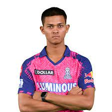

MODULE 3 TASK |
|
|---|---|
| Home About Contact | |
The Youngstar Yashasvi Jaiswal |
|
|  | |
|
Yashasvi Jaiswal made an unbelievable and most inspiring journey from selling ‘Pani Puri’ during
the evening and sleeping under a tent to becoming the youngest double centurion in the history
of List A cricket at the age of 17 years, 292 days.
Yashasvi Jaiswal came under the spotlight when he scored a double hundred while playing for
Mumbai against Jharkhand in the Vijay Hazare Trophy 2019-20 which made him the youngest batsman
ever in List A cricket to score a double century.His career point changed when he was bought by
an Indian Premier League (IPL) team Rajasthan Royals for a whopping INR 2.40 crores in IPL 2020
Auction.
|
|
| Designed & developed by Banik Roy Mandal © 2023 |
|